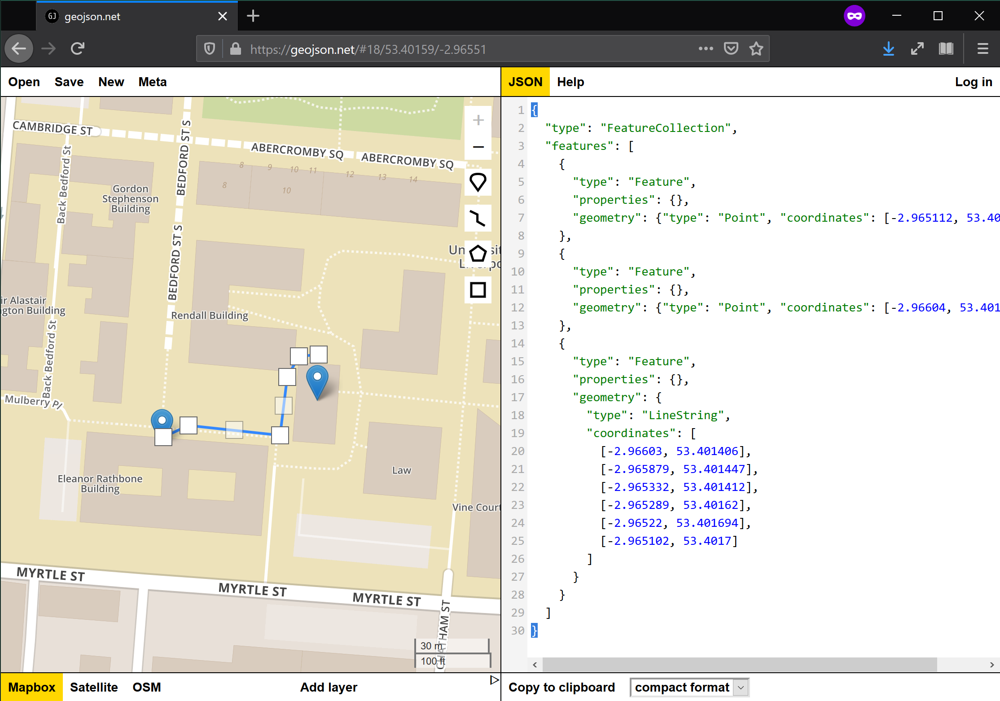
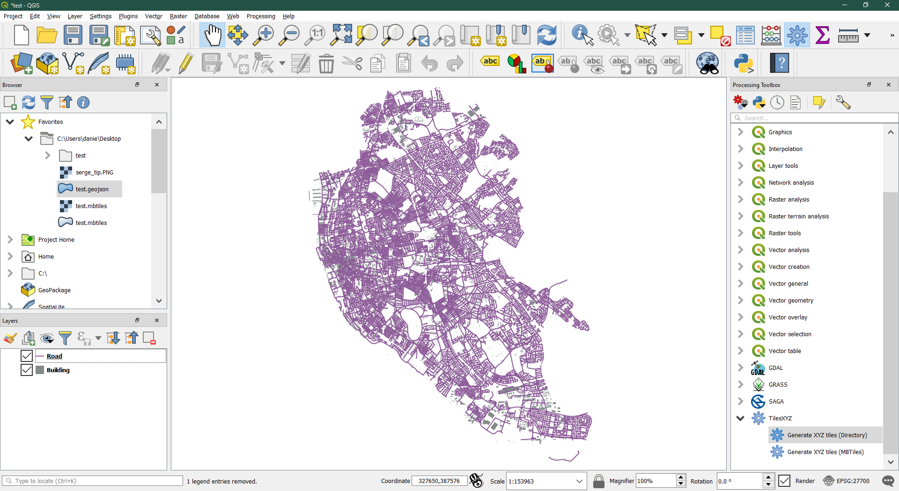
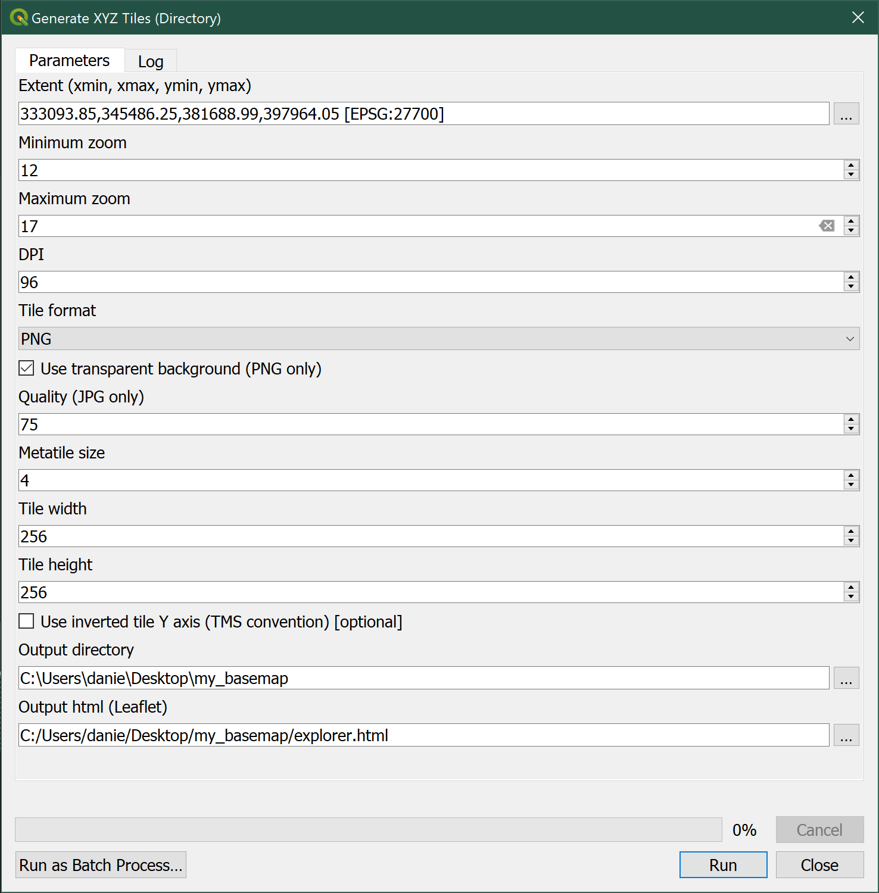

Lab 3 - Creating, manipulating, and integrating web geospatial data
In this lab, we will explore and familiarise with some of the most common data formats for web mapping: GeoJSON and Mbtiles. To follow this session, you will need to be able to access the following:
- The internet
- QGIS. Any version should work in this context, but if you are installing it on your computer, QGIS 3.10 is recommended
- A Python installation such as the “Geographic Data Science Stack 2019” in the University of Liverpool computers, or the
gds_envDocker container in your own machine (see here for instructions)
GeoJSON
To get familiar with the format, we will start by creating a GeoJSON file from scratch. Head over to the following website:
In there, we will create together a small example to better understand the building blocks of this file format.

We will pay special attention to the following aspects:
- Readability
- Coordinate system
- Ability to add non-spatial information attached to each record
- How to save it as a file
EXERCISE
Create a GeoJSON file for the following data and save them to separate files:
- Your five favorite spots in Liverpool
- A polygon of what you consider to be the boundary of the neighbourhood where you live and the city centre of Liverpool. Name each
- A route that captures one of your favorite walks around the Liverpool region
If you are comfortable, upload the files to Microsoft Teams to share them with peers.
With the files from the exercise at hand, we will then learn how to open them in Python. Start Jupyter Lab session and open a new notebook so you can keep record of what you do (rename it to something you will remember, like web_mapping_lab_03.ipynb).
Then let’s start by importing geopandas:
# This ensures plots and maps render in the notebook
%matplotlib inline
import geopandas
Now, place the .geojson files you have created in the same folder where you are storing the notebook, or somewhere reachable. For this example, we will assume that the file is called test.geojson and it is stored in the figs folder, accessible from the same location where the notebook is. We can read the file as:
db = geopandas.read_file("figs/test.geojson")
We can inspect the file to see what it contains:
db.head()
Nombre geometry
0 Roxby Building POINT (-2.965112 53.401534)
1 None POINT (-2.96604 53.401377)
2 None LINESTRING (-2.96603 53.401406, -2.965879 53.4...
If you are familiar with GeoDataFrame objects, this is exactly it, read straight from a GeoJSON file (if you need a refresher, you can check out Lab 3 of the GDS’19 course).
Because once read, it behaves exactly like any of GeoDataFrame objects, we can operate on it and tap into the functionality from geopandas. For example, we can inspect the Coordinate Reference System (CRS) in which it is expressed:
db.crs
{'init': 'epsg:4326'}
Using some of geopandas’ functionality. We can reproject it to express it in metres:
db_prj = db.to_crs(epsg=27700)
Let us pay a bit of attention to how spatial data is stored in a GeoDataFrame:
print(db.geometry[0])
'POINT (-2.965112 53.401534)'
This is called “well known text” (wkt) and is a representation that spatial databases like PostGIS use as well. Another way to store spatial data as text for storage or transfer, less (human) readable but more efficient is the “well known blurb”(wkb):
db.geometry[0].wkb
b'\x01\x01\x00\x00\x005\xd1\xe7\xa3\x8c\xb8\x07\xc0\xb4\x1dSwe\xb3J@'
But the underlying data (point coordinates) can also be extracted directly within Python. If we want to pull out the x coordinate for each point, we can access it under geometry.x:
db.geometry[0].x
-2.965112
Another benefit of reading data into geopandas is we can use its analytical capabilities. For example, we can calculate the length of line in db:
line = db_prj.loc[2, :]
line.geometry.length
88.22374412204398
Given the the line is expressed in metres (check out EPSG:27700), we can conclude the line spans about 88m.
Once we are happy with the data as we will hypotehtically need it, we can write it out to any other file format supported by geopandas. For example, we can create a Geopackge file with the same information:
db_prj.to_file("figs/test.gpkg", driver="GPKG")
EXERCISE
- Read the
GeoJSONcreated for your favorite walks in Liverpool and calculate their length - Pro: explore the geopandas documentation and try to extract the area for the polygon covering your neighbourhood
Tilesets and Mbtiles
In this section we will dive into the concept of tiles to understand why they have been so transformative in the world of web mapping. We will learn how to prepare a map that is styled in QGIS and then saved as either an .mbtiles file of a structured folder with tiles that allows to serve it over the web in efficient ways. Finally we will explore the tileset built using the JavaScript library Leaflet.js.
Before we get started, let’s get all the required pieces together:
- Fire up QGIS 3
- Make sure you have the
XYZ Tilesplugin installed - Download OS GeoData Pack from CDRC (NOTE: you might have to register) and unzip it in an accessible folder
Build your own basemap
Basemaps are maps that provide context to more specific spatial data you might want to present. For example, if you have a set of points that represent events in space, it might be hard to understand their distribution unless you put them in the context of a more complete geography. A basemap is a quick solution in this case.
Explore the layers provided in the GeoData Pack and select those you want to use for your basemap. Once ready, go ahead and add them as layers in QGIS. Tweak colors, transparencies, linewidths, etc. until you get a map you are happy with.

Create a tileset for your map
Once ready to build the basemap from your created map, head over to Processing --> Processing Toolbox and select the TilesXYZ --> Generate XYZ Tiles. You can start with the Directory option. Pick parameters and, when everything is ready, hit Run. Depending on your settings, this will take some time, be patient.

When finished, QGIS will have created a folder with a particular structure, that contains all the tiles required to serve your basemap. You can peak into them to find they are really just images of different parts of your map at different zoom levels.
Explore your basemap with Leaflet.js
If you store your basemap in a folder, QGIS will also generate for you a HTML file with a bit of JavaScript code that will allow you to explore the tileset in a browser. Play with it a little bit and familiarise with the look and feel of it.

If you feel adventurous, you can also peak into the code that makes the web map possible. To do that, you will need to either open the HTML file on a text editor, or inspect the source code from the browser (in Firefox, for example, this can be accessed through Tools --> Web Developer --> Page Source).
Create a .mbtiles file for easy transport
Finally, you can recreate the process above but in this case choosing the MBTiles instead of the Directory option. This will make QGIS generate the same tileset but, instead of storing it directly on a folder, it will save it as a SQLite database in with the .mbtiles format. This is easier to move from one environment to another and is also supported by most web mapping platforms, such as Mapbox.
This work is licensed under a Creative Commons Attribution-ShareAlike 4.0 International License.